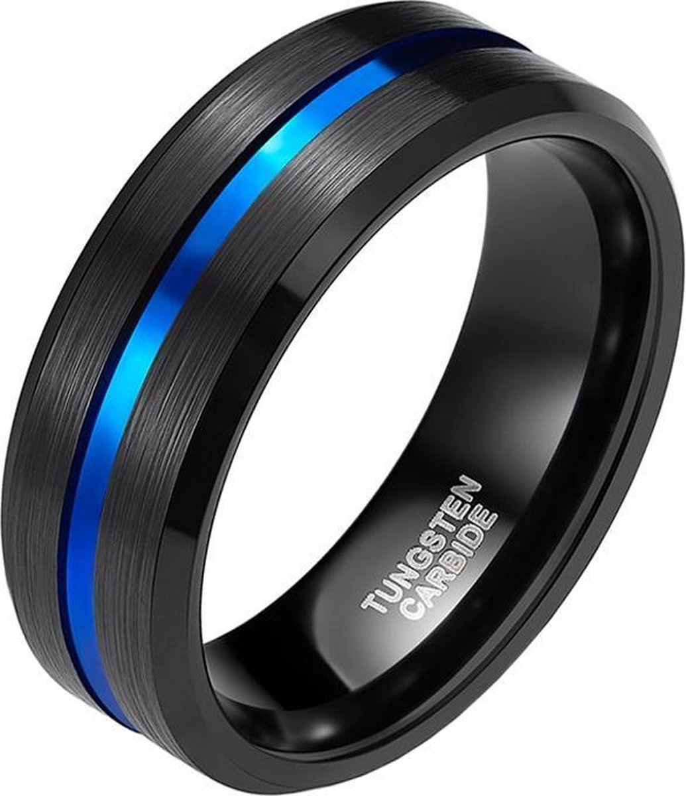
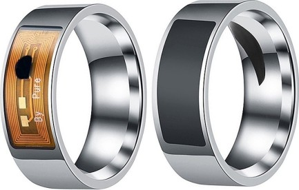

Topic opdracht wearables
Het wordt steeds meer mainstream door het succes van de vele sportarmbanden zoals Nike Fuelband en Fitbit, maar ook door de aanpassing van de Apple Watch en vergelijkbare smartwatches. Waar de focus nu vooral op sport en bewegen ligt, breidt het spectrum zich uit naar andere gebieden zoals e-fashion, e-health, de game-industrie en markten zoals koptelefoons. De technologie wordt ook elk jaar kleiner en draagbaarder. Waar het begon met slimme horloges, interactieve armbanden en ringen, zou de volgende stap kunnen zijn om de technologie ongemerkt te integreren in kleding, schoenen, bril of lichaam.
Aan de hand van een case moest er een concept komen rond het onderwep wearables.
De case luidde als volgt:" Kun je een interactief draagbaar concept bedenken dat niet in de lecture is genoemd
en dat sociale interactie stimuleert door je gevoelens te tonen, op basis van hersengolven? Hoe zou je deze brainwave
-voelende interface ontwerpen? Wat zou het opleveren?"
Concept:Speed dating rings
Het concept wat ik had bedacht is voor een speed dating event waarbij iedereen een ring draag met daarop 2 streepjes die licht kunnen geven.De lichten kunnen je gevoelens laten zien in de vorm van kleuren door dat ze je zenuwen,hartslag en breingolven kunnen meten.Uit die gegevens kunnen bepaalde conclusies kunnen getrokken worden. Naast de ringen is er ook een kaart op tafel die met deze nieuwe informatie gekoppeld is met leuke teksten die een gesprek kan beginnen.
 Research:
In de lecture over wearable vond ik het onderwerp wearable in fashion heel interessant.
Ik wilde er meer over het onderwerp en toen kwam ik een YouTube video tegen van het bedrijf "CuteCircuit".
CuteCircuit, opgericht in 2004, is 's werelds eerste modemerk met draagbare technologie.
Ze bieden modemet opkomende technologieën en slimme stoffen om modeontwerp te creëren dat er niet alleen mooi uitziet,
maar ook interactieve mogelijkheden biedt.
Op de website van kan je verschillende projecten vinden waarmee ze bezig zijn.
Een van die projecten is de “SoundShirt” waarbij geluid wordt omzet in trillingen, speciaal ontworpen voor doven mensen.[klik op de afbeelding voor een video]